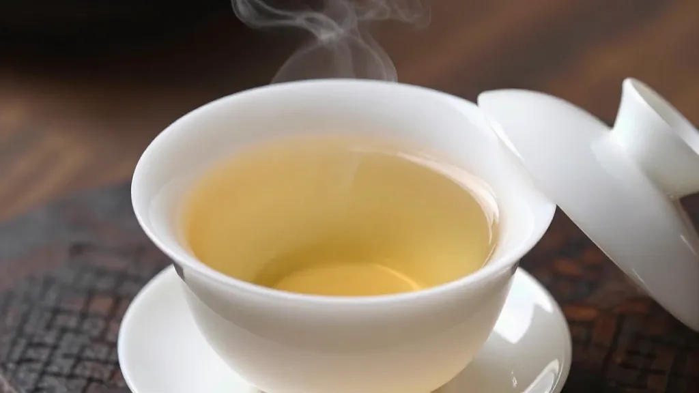

开篇回答：泡凤凰单丛用什么水最好？答案是——凤凰山山泉水！水不好，茶再好也泡不出味道。
🌿 晚上23点多，店里来了姚老师、隔壁空调老板，还有打麻将的陈老板。
我笑着说："来，坐！今天请你们喝好茶——凤凰单丛。"
姚老师问："泡茶用水有什么讲究吗？"
"这个讲究可大了！"我回答，"水不好，茶再好也泡不出味道。"
📌 泡茶用水知识点
- 水质：软水为佳
硬水杂质多，会锁住茶香，让茶汤发涩。软水泡出来的茶更甘甜~ - 水源选择
首选山泉水，其次天然矿泉水。日常用静置后的自来水也可以，但要开盖静置半天散氯气~ - 泡凤凰单丛最佳用水
凤凰山山泉水最优！能最大化激发单丛的高扬香气，花香、蜜香都能出来，茶汤绵柔甘滑~ - 水温：全程沸水100度
凤凰单丛属于高焙火、高香的乌龙茶，100度开水才能逼出层次香气~
大家品了一口茶。"这茶汤真甘甜！"姚老师惊喜地说~
"水是关键，"我解释道，"用凤凰山的水泡，香气最能出来~"
📌 FAQ 常见问题
Q：泡凤凰单丛用什么水最好？
A：凤凰山山泉水最优，能激发最大香气
Q：自来水能用吗？
A：可以，但要静置半天散氯气
Q：什么水不能用来泡茶？
A：高矿化硬水、地下水、千滚水，容易压制茶香
Q：水温多少度？
A：全程100度沸水，才能逼出香气